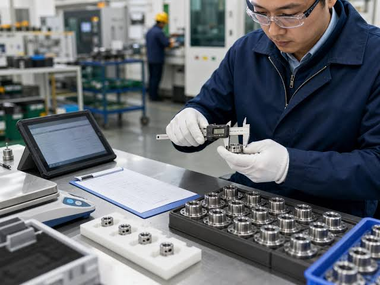

Concepto de calidad
La calidad es la capacidad de un producto para cumplir los requisitos establecidos y satisfacer las necesidades del cliente. El control de calidad consiste en verificar mediante mediciones, pruebas e inspecciones que el producto cumpla las especificaciones técnicas.
Inspección, prevención y mejora continua
- Inspección: identifica productos que no cumplen los requisitos.
- Prevención: actúa sobre las causas para evitar que los defectos ocurran.
- Mejora continua: revisa los resultados y aplica cambios para perfeccionar los procesos.
Herramientas de calidad
Diagrama de Pareto
Ordena los problemas de mayor a menor frecuencia o impacto para priorizar los que merecen atención primero.
Diagrama de Ishikawa
Organiza las posibles causas de un problema en categorías, como máquinas, métodos, materiales, personas y medición.
Listas de verificación
Permiten registrar de manera ordenada las inspecciones, los defectos observados y el cumplimiento de requisitos.
Defectos industriales frecuentes
- Rebabas en los bordes de piezas plásticas.
- Deformaciones o dimensiones fuera de tolerancia.
- Burbujas, manchas o variaciones de color.

Herramientas y aplicaciones
| Herramienta | Función | Ejemplo |
|---|---|---|
| Pareto | Priorizar los problemas más importantes. | Identificar el defecto más frecuente. |
| Ishikawa | Investigar causas posibles. | Analizar deformaciones en envases. |
| Lista de verificación | Registrar datos de inspección. | Revisar dimensiones y apariencia. |